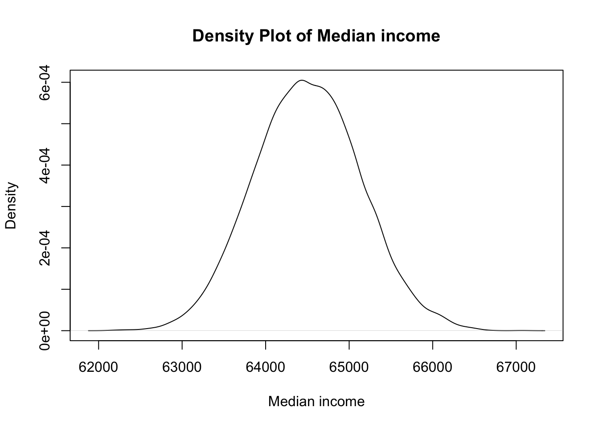

Code
library(VGAM)A BBC report dated 16th January 2023 presents an interesting statistics. It quotes an OXFAM report, stating that 40% wealth is in the hands of top 1%.
This can be taken as 40:1 Pareto index.

Italian polymath Vilfredo Pareto observed that approximately 80% of Italy’s land was owned by 20% of the population. It is surprisingly self similar over a wide range of magnitudes. That means, 20% of the 20% of total population own 80% of 80% of total land and goes on.
This is a simplification of a general rule. The ratio or index can be any where and need not add up to 100.
The Pareto distribution can be described with only 2 simple parameters, ⍺ and xm.
If the Pareto ratio is x:y,
\[ùõº = log(x+y)/log(x)\]
Exact formula is logx(x+y)
Here, \[ùõº=log(41)/log(40)\]
⍺ = 1.0067
Smaller the ⍺, the larger the proportion of very high-income people and vice verse. Here we can that the index is very low, close to 1.
It is the minimum value of the parameter under study.
Assume that a marginal individual works for 308 days a year with a minimum wage of ₹105. Her yearly income will be around ₹32400. This can be taken as the minimum value of x, the income distribution we are studying. Let’s call it xm.
What will be the mean and median income of the community in which she is living? What will be the maximum income possible? Let’s calculate
Monte Carlo Simulation can be defined as a computational method of repeated random sampling to obtain numerical results. It can be done using excel with or without add-ons for simulation. Excel does not natively support Pareto sampling. Free Open Sourse add-ons like XLRisk also (right now) does not support the same. r is excellent tool in this situation and also for Monte Carlo simulation of returns for volatile instruments using levi stable distribution
First, install the necessary package VGAM if you haven’t already and load.
library(VGAM)Choose the parameters for the Pareto distribution. We have already calculated the ⍺ and xm. See Section 3
alpha <- 1.0067
xm <- 32400Use the rpareto function to generate random samples. Let’s simulate the wealth of 1000 individuals.
n <- 10000 # Number of individuals
income_samples <- rpareto(n, scale = xm, shape = alpha)To perform a Monte Carlo simulation, we will repeat the random sampling multiple times and analyze the results. Let’s say we want to perform 10000 simulations.
num_simulations <- 10000
simulation_results <- matrix(NA, nrow = num_simulations, ncol = n)
for (i in 1:num_simulations) {
simulation_results[i, ] <- rpareto(n, scale = xm, shape = alpha)
}
# Summarize the results
mean_income <- apply(simulation_results, 1, mean)
median_income <- apply(simulation_results, 1, median)
sd_income <- apply(simulation_results, 1, sd)# Histogram of mean income from simulations
hist(mean_income, breaks = 125, main = "Histogram of Mean income from Monte Carlo Simulations", xlab = "Mean income")
# Summary statistics
summary(mean_income) Min. 1st Qu. Median Mean 3rd Qu. Max.
213175 296589 344524 563287 438743 187285934 summary(median_income) Min. 1st Qu. Median Mean 3rd Qu. Max.
62114 64078 64491 64508 64934 66706 summary(sd_income) Min. 1st Qu. Median Mean 3rd Qu. Max.
9.692e+05 3.336e+06 5.672e+06 2.695e+07 1.205e+07 1.871e+10 Median income is the most likely income one can expect in this community. It is an approximation of geometric mean of all the possible incomes.
# Density plot of median income
plot(density(median_income), main = "Density Plot of Median income", xlab = "Median income")
# Generate colors for the paths
colors <- rainbow(num_simulations)
# Plot the first simulated path with the first color
plot(1:n, simulation_results[1, ], type = "l", ylim = c(min(simulation_results), max(simulation_results)),
xlab = "Individual", ylab = "Income", main = "Simulated Paths of Income", col = colors[1], lwd = 2)
# Add the rest of the simulated paths with different colors
for (i in 2:num_simulations) {
lines(1:n, simulation_results[i, ], col = colors[i], lwd = 2)
The minimum standard deviation of income observed across simulations is ₹883,000.
The first quartile (25th percentile) of standard deviation of income is ₹3,341,000, indicating that 25% of simulations have standard deviation of income below this value.
The median standard deviation of income is ₹5,665,000, which represents the middle value of the distribution.
The mean standard deviation of income across all simulations is ₹29,140,000.
The third quartile (75th percentile) of standard deviation of income is ₹11,940,000, indicating that 75% of simulations have standard deviation of income below this value.
The maximum standard deviation of income observed is ₹37,240,000,000.
While the marginal worker is earning ₹2700 per month, the minimum mean income per month for the community is 17500 per month. i.e, the lowest observed mean of the simulations. Similarly, the maximum mean income is ₹3.1Cr.
Median income is around ₹5375.
These summary statistics provide insights into the asymmetry of income distribution and variability of income across the simulated scenarios. Let’s have a final look at Income distribution.
The individual incomes of many, represented by the red lines, languish in the shadows of colossal giants. These titanic paths of income towering above, dwarfing the humble incomes below, paints a stark contrast between the vital few and the useful many.
We can make another important inference from this analysis:
NA: This specifies the value that will fill the matrix. In this case, NA indicates that each element of the matrix will be initialized as a missing value.
nrow = num_simulations: This argument specifies the number of rows in the matrix. Here, num_simulations is the number of simulations we want to run, so the matrix will have num_simulations rows.
ncol = n: This argument specifies the number of columns in the matrix. In our code, n is the number of individuals we want to simulate wealth for, so the matrix will have n columns.
for (i in 1:num_simulations): This loop iterates num_simulations times, where i takes on the values from 1 to num_simulations.
simulation_results[i, ] <- rpareto(n, scale = xm, shape = alpha): In each iteration of the loop, you’re generating a set of random wealth values for n individuals using the Pareto distribution specified by the parameters scale = xm and shape = alpha.
rpareto(n, scale = xm, shape = alpha): This function generates n random numbers from a Pareto distribution with scale xm and shape alpha.
simulation_results[i, ] <- ...: This assigns the generated random wealth values to the i-th row of the simulation_results matrix. Each row of simulation_results represents the wealth distribution for one simulation iteration.